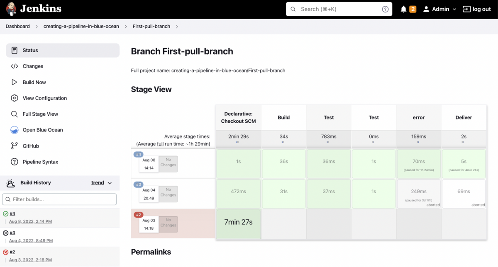

alumise taseme case-vahendid on tööriistad, mis keskenduvad systeemiarenduse hilisemale osale, nt koodi genereerimine, testimine ja
juurutamine. kasutatakse nt mudelite baasil koodi genereerimiseks, automaatsed testid ja debug, versioonihaldus.
ise kasutanud nt vscode või IntelliJ koodi genereerimist, debugimine igas IDE-s olemas pmst.
pole kasutanud nt ibm rational rose, genereerib koodi uml-diagrammide baasil, automaatsed testid
samuti nt jenkins, mis tegeleb integratsiooni ja giti integreerimisega.
